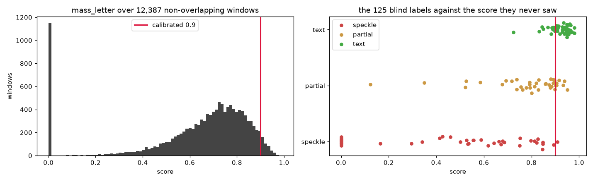
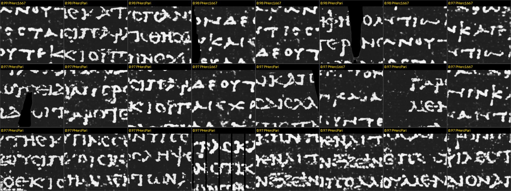

Every ink prediction the Vesuvius Challenge has published, scored for letter-scale legibility on windows of equal physical area — so the result is a map of where the pipeline fails, in units of papyrus.
There is no objective criterion for whether a Herculaneum ink prediction is readable. The de facto standard is that a person looked at it — officially, ink detection is evaluated “as determined by the Vesuvius Challenge’s Papyrological Team.” That does not scale to 423 published predictions, and it cannot tell a model developer whether last month’s change helped.
This is a reproducible number in its place, computed over the entire published corpus. It needs no GPU, no model and no download: it runs on the ds8 JPEGs the project already publishes, and every headline below is re-derived from a CSV in the walkthrough notebook.
These are not the numbers this page carried when it was first published. An audit of the released artifacts found four defects — an unreproducible AUC, statistics computed over a 4× oversampled grid, a grouping key that merged distinct predictions, and an unstated denominator. All four are fixed, and both the old and the new figures are printed in Corrections rather than quietly replaced.
atlas_manifest.csv
lists every one with its reason, so “the corpus” is a checkable claim.The µm token in a published prediction filename names the source scan, not the
pixel pitch of the raster you are handed. Predictions from the 1um_s1z2 recipe are
rendered from level 1 of the multiscale pyramid, so their true pitch is double what
that token says.
To be precise about whose fault this is: the filename is not wrong. It also
carries the pyramid level, as a separate -L1- token, and
named_µm × 2L reproduces the true pitch in 421 of 421
predictions we could resolve. The information is all there.
What is missing is any statement that the two tokens must be combined. They sit ~40
characters apart in a 100-character name, the L token is absent entirely on
level-0 files, and the naive read — take the µm token as the pitch — is silently wrong by
exactly 2× on 112 of 423 files. That is a documentation gap rather than a data defect, and
it is reported here as one.
| recipe | µm in the filename | source_group | actual raster pitch |
|---|---|---|---|
canon | 2.399 | 0 | 2.399 µm/px |
1um_s1z2 | 1.129 | 1 | 2.258 µm/px |
The tell needs no metadata at all: 113 segments published under both recipes have the
same pixel dimensions (ratio 1.06) but physical widths differing by exactly ×2.00 under
the naive reading. It is the same papyrus, so one of the two numbers is wrong. The
authoritative confirmation is source_group in each surface volume’s
.zattrs, which agrees with the L token in all 421 cases.
A retracted finding of our own — this is what the trap costs.
An earlier version of this analysis found
recipe canon beating 1um_s1z2 in 36 of 36 paired
segments — sign test p ≈ 2.9 × 10⁻¹¹. After correcting the pitch: 14 / 36,
p = 0.243. The sweep was entirely the unit error. That finding is retracted,
and it is printed here rather than deleted quietly.
Two further bugs in this project were the same mistake in different clothes: comparing a physical quantity in pixel units across scans of different resolution. All three produced results that looked like discoveries.
A letter is about 3 mm of papyrus. mass_letter is the fraction of predicted ink
that sits in connected components between 960 and 7200 µm across — a band, not a
lower bound, because a saturated white smear is one enormous connected component and scores
perfectly under a lower bound. Both the band and the analysis window are measured in microns,
never pixels.
The threshold is 0.900, calibrated against 125 blind stratified labels: the sheets carried an index and nothing else, in shuffled order, and the index → window key was written first. AUC = 0.931 for text against everything else, which has no threshold to tune; best F1 = 0.800, precision 0.818, recall 0.783.
That AUC includes an ink floor: mass_letter is a fraction
of ink mass, so a window holding almost no ink can still score high if the little it holds falls
in the letter band. Windows below 5% ink coverage score 0. Without it the AUC is
0.918. The gain is real but small — a bootstrap over the labels puts it at
+0.013, CI95 [0.000, 0.041], and it comes down to a single window — so it ships as a stated
guard. --ink-floor 0 turns it off, and the headline without it is
3.96% [3.63%, 4.31%] against 3.92% with it: no conclusion here rests on it.

The ranking was computed with no knowledge of which scrolls have actually been read. It puts in first place the scroll that was read end to end, and gives the 2023 Grand Prize scroll the only other interval that clears the rest:
| scroll | windows | readable | % | CI95 | what happened in reality |
|---|---|---|---|---|---|
| PHerc1667 | 307 | 29 | 9.45% | [6.66%, 13.24%] | first scroll unwrapped and read end to end, 2026 |
| PHerc0814 | 13 | 1 | 7.69% | [1.37%, 33.31%] | 13 windows — the interval spans the whole table |
| PHercParis4 | 7,933 | 435 | 5.48% | [5.00%, 6.01%] | the 2023 Grand Prize scroll |
| PHerc0172 | 3,710 | 20 | 0.54% | [0.35%, 0.83%] | — |
| PHerc0139 | 396 | 1 | 0.25% | [0.04%, 1.42%] | — |
| PHerc0343P | 8 | 0 | 0.00% | [0.00%, 32.44%] | — |
| PHerc0500P2 | 20 | 0 | 0.00% | [0.00%, 16.11%] | — |
This is corroboration, not proof — the two leading scrolls are also the best-scanned and most-worked. But the agreement was not engineered, and it is the cheapest available evidence that the ordering means something.
Read the intervals before ranking anything. Only PHerc1667, PHercParis4 and PHerc0172 have enough independent area for their positions to mean anything. The other four are decided by a handful of windows each: PHerc0814 sits second on one readable window out of thirteen, and its interval covers every other row in the table.
PHercParis4 is 64% of the non-overlapping windows. Per-scroll figures are comparable to each other; the corpus-wide average is de facto a PHercParis4 average and should not be quoted without that caveat. PHerc0814 and PHerc0500P2 are additionally scored over less than half of themselves, because the coverage filter drops the rest.
Every scored prediction, ranked. % is the share of that prediction’s area scoring at or above 0.900, over its non-overlapping windows, with a Wilson 95% interval. jpg opens the official ds8 prediction straight from the open bucket; map opens a rendered score field where one exists. Predictions with fewer than 20 independent windows are excluded by default — a one-window prediction at 100% is noise, not a result. Each row is one published file: some segments appear more than once under the same recipe label, and merging them by name was one of the defects fixed below.
loading…
| scroll | segment | win | read | % | links |
|---|
A percentage says how much of a scroll is readable, not where. The 91 predictions
with zero readable windows are the failure list;
failures.csv is exactly that list,
hotspots.csv and
segment_summary.csv carry full-resolution
coordinates — so a proposed fix has a before/after number attached to it instead of an opinion.
| scroll | predictions with zero readable windows | of ranked |
|---|---|---|
| PHerc0172 | 67 | 70 |
| PHercParis4 | 23 | 89 |
| PHerc1667 | 1 | 10 |
PHerc0172 is the shape of the result: 67 of its 70 rankable predictions produce nothing this metric can read, and it is the scroll whose scan is 7.91 µm/px — more than three times coarser than the rest of the corpus. Whether that is the scan, the surface, the model or the ink is exactly the question this atlas hands to someone who can answer it. Each row carries the coordinates of its own best window, which is where to look first.

If you read this page before, the headline moved from 4.08% to 3.92% [3.60%, 4.28%] and the failure list from 82 predictions to 91. Four things were wrong. All four were found by auditing our own output, and each is fixed in the scripts rather than only in the prose.
calibrate.py read each labelled window’s score from labeling_key.csv
— the file written when the sample was drawn — instead of from atlas.csv.
The key stores a snapshot. The metric was fixed afterwards, and 6 of the 125 rows
silently kept their pre-fix score. All six were PHerc0172, all six came from the
supplementary labelling round that skipped the re-join step, and most were inflated — one
text window by +0.211, one partial by +0.261.
Scored honestly from the atlas, AUC is 0.918, not 0.930. The threshold 0.900
survives unchanged. The 0.930 is earned back by a different and legitimate route — the ink
floor described above, which lifts it to 0.931 — but a paired bootstrap puts that gain at
+0.013, CI95 [0.000, 0.041], P(gain > 0) = 0.648, so it ships as a guard and
not as a measured improvement. calibrate.py now reads from the atlas and prints a
warning naming any key row that has gone stale.
The atlas strides by half a window in both axes, so each patch of papyrus is covered about four times and adjacent rows share pixels. Percentages over that grid are percentages of nothing physical, and any confidence interval over it is roughly twice too narrow. All statistics now go over a non-overlapping tiling — 12,387 of the 46,764 windows, same physical area each, no shared pixels. The full grid is still what the maps and contact sheets draw from, where overlap is a feature. The headline barely moved; the point is that it now comes with an interval that means something.
(scroll, segment, recipe) is not a unique keyThe same segment is published more than once under the same recipe label — different models, same three-token name. Grouping by that tuple merged distinct predictions into one row: 6,172 atlas rows collided, and the site index was handing one prediction’s pixel pitch to another prediction’s row. Everything is now keyed on the prediction’s S3 path, so the table above has 374 rows, not 321.
49 of the 423 published predictions were never scored — too small for one window, too little
on-segment coverage, or no resolvable pitch — and they were simply absent, in neither the
numerator nor the denominator.
atlas_manifest.csv now has one row per
published prediction with the reason: 374 scored, 25 too small, 22 below the coverage
floor, 2 with no resolvable pitch.
The atlas scores 8× downsampled JPEGs, and JPEG is lossy at the 8×8 block
scale — which is the scale at which the binarisation decides whether two blobs touch. So the
whole atlas could have been measuring compression artefacts. It is not: re-deriving the ds8
raster losslessly from the full-resolution TIFF and re-encoding it at the published quality
moves the score by a mean of −0.0007 (r = 0.9986) over 408 windows spanning
every pitch in the corpus, and flips 0 of 408 across the threshold. A letter is
~160 px at ds8, twenty times the JPEG block. Raw numbers in
jpeg_effect.csv.
LimeGS/herculaneum-legibility-index (July 2026) scores the same official ink maps for legibility with a trained CNN, goes deep on Scroll 1 and PHerc 0139 with human review of what it flags, and independently arrived at the same physical-scale requirement (windows must be ~1 cm). It is the closer, more thorough instrument for the question “where is there text worth reading?”
This atlas points the other way. It asks “where does the published pipeline fail?”, covers all 7 scrolls and 374 predictions in one comparable table, and trains nothing. Their index also reports a higher AUROC (0.985) against human-reviewed labels than ours does against AI-produced ones, which is said here rather than left to be discovered. The two are complementary, and the overlap is stated rather than hidden.
Their pipeline is immune to the unit trap above, and the reason is worth copying.
They never read the pitch from a filename. They derive it from geometry —
px_um = (area_cm2 × 1e8 / (H × W))0.5, where the area comes from the
segment mesh — and then cross-check it against the theoretical ds8 downsample. Physical area
and pixel count are both directly observable, so it does not matter which pyramid level a
render came from.
That is the honest scope of our report: the trap catches whoever takes the µm token at face value, as we did. A pipeline that measures scale instead of reading it never meets the problem.
atlas.csv and the label files.
It needs numpy, and matplotlib for the last plot. No GPU, no download..zattrs and verified against the JPEG dimensions.{kind=link}
{kind=link}
{kind=link}